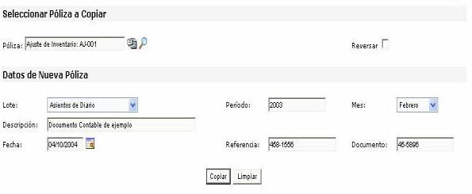

Esta opción, permite copiar documentos contables ya aplicados o reversar su ejecución. Seleccione el documento a copiar o reversar de la lista. Una vez seleccionado el documento, es posible consultar su contenido haciendo click sobre el icono junto a la lista. La consulta mostrará un reporte de la póliza contabilizada.
Adicionalmente con la opción de imprimir, puede hacer click sobre el icono para exportar el reporte en formato MsWord Versión XP o en formato Ms Excel XP. El reporte se visualizará en un nuevo documento que puede ser guardado en el formato correspondiente.
Luego ingrese los datos de la nueva póliza una descripción, el periodo (de 4 dígitos) y el número de documento, seleccione el mes y la fecha. Una vez que tenga los datos haga click en el botón Copiar.

Figura 1. Reversar/Copiar Documentos Contables.